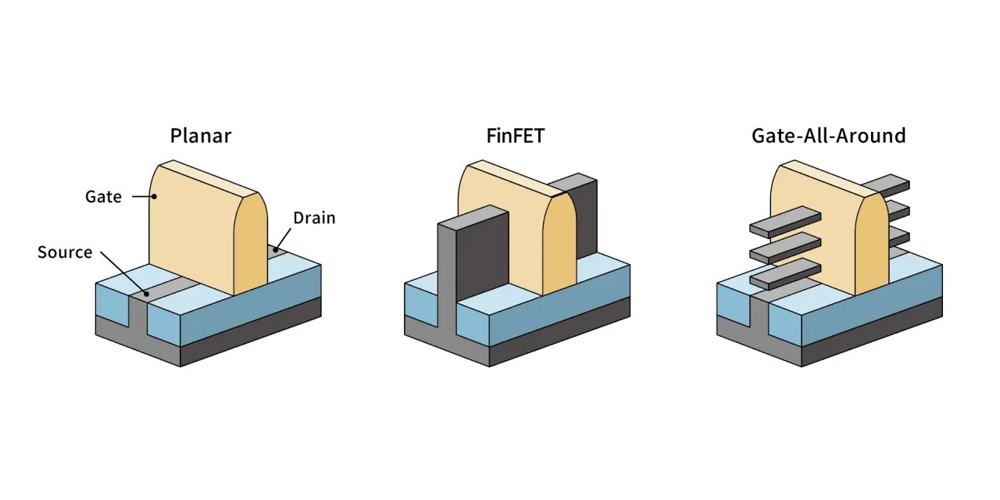

半导体器件与先进工艺
研究硅基半导体从材料到器件再到工艺的完整链条——从 FinFET、GAA 等先进晶体管结构，到 RRAM、PCM、FeRAM 等新型非易失存储器件，再到 EUV 光刻等量产工艺的物理极限挑战。
这个方向在研究什么
芯片制造的本质是一套极其精密的"印刷术"——把电路图案用光刻方式转移到硅片上，再经过离子注入、薄膜沉积、化学蚀刻等数百道工序，在硅片上构建出三维的晶体管和金属连线。过去五十年摩尔定律的延续，靠的是制程工程师每隔几年把光刻分辨率推高一档、把晶体管尺寸再缩一半。走到 2025 年第四季度，台积电 N2 节点开始量产，关键尺寸进入 2 纳米量级——大致是十几个硅原子排成一列的宽度。代价同步上去：ASML 单台 high-NA EUV 光刻机约 3.5 亿美元，全球只有这一家供应商。但钱能买到机器，买不到物理：很多原本支撑摩尔定律的物理机制，在这个尺度上已经不灵了。这个方向的研究都在面对同一个问题——当原本的物理用法走到尽头，能不能换一种物理顶上去? 下面三条战线就是这个问题的三种回答。

第一条战线在晶体管本身的形状上。MOSFET 的工作原理是栅极用电场控住源极和漏极之间硅沟道里的电子流动——电压打开就是 1，关闭就是 0。但沟道里其实有两股电场在拉锯：栅极从顶部往下压的纵向电场把电子按住，源极到漏极之间的水平电场把电子拉过去。沟道足够长时，栅极占主导，能从源到漏整段守住；一旦沟道缩短、源漏挨得更近，漏极的水平电场就侵入栅极的管控区域，把源极一侧的能量势垒提前拉低——栅极还说"关"的时候，电子已经被漏极拉过去了(这就是 DIBL，漏致势垒降低，短沟道效应里最致命的一种)。栅极只贴一面，控制力本来就有限，沟道一短就守不住。FinFET(鳍式晶体管)的解法是把沟道立起来变成一片"鳍"，栅极三面包，撑住了从台积电 16/14 到 5 纳米的几代节点；GAA(全环绕栅，Gate-All-Around)再进一步，把沟道做成水平的纳米片，栅极四面环绕——这是 N2 这一代的新结构。下一步是 CFET(Complementary FET)，N 型和 P 型晶体管垂直堆叠到同一根栅极上，让单位面积密度再翻倍。这条线上的工具是 EUV 光刻：13.5 纳米波长的光，光子数稀少到要"数着用"，每条线的边缘都有不可避免的随机起伏(stochastic effects)，版图阶段就得把这种统计量考虑进去；最新的 high-NA EUV 把数值孔径从 0.33 推到 0.55，分辨率再翻一倍，代价就是单台机器 3.5 亿美元。但栅极的几何救不了所有问题——除了"沟道太短"，还有一件事在物理上等着：沟道本身的厚度也得继续降。
第二条战线在沟道的材料上。沟道为什么也要薄?栅极的电场只能渗进沟道很薄一层，沟道再厚下面的电子还是会从源极漏到漏极——所以晶体管做小，不光栅极几何在变，沟道厚度也得跟着降。问题是硅做不薄：硅是 3D 体相晶体，每个原子四个共价键四面体伸出，做到 1-2 纳米时表面那层硅原子的键找不到对象，形成大量悬挂键(dangling bonds)，缺陷成主导，迁移率塌掉。二维半导体就是为这条边界准备的远期答案。"二维"不是说几何上没有厚度——单层仍有 0.6 纳米——而是晶体结构本身就只有一层平面厚度：一片单层从化学键角度自洽闭合，不是从 3D 体相切下来的薄片，所以没有悬挂键。以 MoS₂、WSe₂ 为代表的过渡金属硫化物(TMD)就是典型——天然层状，层内强共价键、层间弱范德华力，可以像剥石墨一样一层层剥下来，每一层都是完整稳定的晶体，迁移率不会因为薄而崩。这是它最本质的物理优势：天生就薄，性能还在。但离量产还远——晶圆级均匀生长难、生长温度高难和 CMOS 后端兼容、欧姆接触阻抗大，每一项都是开放问题。石墨烯迁移率漂亮但零带隙——做逻辑器件没有"关"的那一档。这是一片活跃的实验室前沿，距离量产至少还需 5-10 年。
第三条战线切到另一个战场——主角不是晶体管，是存储器件。DRAM 的支柱是"用一颗电容里的电荷量代表 0 或 1"，电容做小到一定程度，漏电和扰动让电荷再也存不住；Flash 靠 3D NAND 一层一层堆维持密度，堆到 200+ 层之后键合应力压不住，继续堆要付出指数级的工艺代价。两根传统支柱在物理上同时撞墙。整个新型存储器件的研究在做的就是一件事——绕开"用电荷数存信息"这条路，找一种全新的物理机制顶上去。挑 RRAM(阻变存储器)讲透：它不存电荷，存的是一段几纳米厚氧化物薄膜的电阻状态——施加正向电压时，薄膜里的氧空位会沿电场方向排列形成一根导电细丝，电阻陡降到低阻态(读作 1)；反向电压把细丝打散，电阻回到高阻态(读作 0)。结构简单到极致——两层电极夹一层介质——可以堆三维高密度阵列，而且电阻还能在中间连续调，这一点让它天然衔接到存算一体(同一颗器件既是存储单元也是模拟乘法器)。最大的难点是变异性：每颗器件里细丝具体在哪里成形带有随机性，阵列里就出现一个良率分布问题，工业界和学术界都在做"怎么把这个分布压窄"。其他三条新型存储路线在做的是类似的事，只是物理量不同——PCM(相变存储器)用材料的结晶/非晶相态、MRAM(磁阻存储器)用磁化方向、FeRAM(铁电存储器)用铁电极化的翻转。共同点都是用别的物理量代替"数电荷"。三条战线做的是同一件事：当原本的物理用法走到尽头，找一种新的物理顶上去——这是这个方向的精神底色，也是它最有研究魅力的地方。
核心研究问题
- 栅极怎么把短沟道重新管住：沟道一缩短，漏极的水平电场就侵入栅极管控区、把源极侧势垒提前拉低（DIBL），栅极还说"关"电子已经被拉过去了。FinFET 三面包、GAA 四面环绕、CFET 把 N/P 垂直堆叠——几何一路升级换来的静电控制力，到底还能撑几代？
- 沟道还能不能更薄、用什么材料薄：栅极电场只渗进沟道很薄一层，做小就得连沟道厚度一起降，可硅切到 1-2 nm 表面全是悬挂键、迁移率塌掉。MoS₂、WSe₂ 这类天然层状的二维半导体天生只有一层平面厚度、没有悬挂键——但晶圆级均匀生长、低温 CMOS 后端兼容、欧姆接触阻抗，每一项都还没解决，这条远期路线到底卡在哪？
- EUV 光子数得"数着用"：13.5 nm 波长下每条线边缘都有不可避免的随机起伏（stochastic effects），版图阶段就得把这种统计量算进去；high-NA 把数值孔径推到 0.55、分辨率再翻倍，单台 3.5 亿美元的代价之外，随机缺陷的良率账怎么算平？
- 存信息能不能不靠"数电荷"：DRAM 的电容、Flash 的浮栅都在物理上撞墙，新型存储就是要换一种物理量顶上——RRAM 用氧空位导电细丝的电阻态、PCM 用结晶/非晶相态、MRAM 用磁化方向、FeRAM 用铁电极化翻转。哪一种能在速度、功耗、耐久性、保持性之间真正打平？
- 怎么把器件的"随机性"压窄：RRAM 每颗器件里导电细丝具体在哪成形带着随机性，放到阵列里就是一个良率分布问题；可这种连续可调的电阻态又恰好让它天然衔接存算一体（同一颗器件既是存储单元又是模拟乘法器）。变异性到底是缺陷还是特性，该在材料层面消掉它还是利用它？
知识路径
graph LR
A["量子力学\n量子隧穿·势垒"] --> B["固体物理\n能带·缺陷·材料"]
B --> C["半导体物理\n载流子·短沟道效应"]
C --> D["半导体器件原理\nFinFET·GAA·新型存储"]
D --> E["IC工艺原理\n光刻·蚀刻·沉积·CMP"]
E --> F["先进工艺技术\nEUV·2D材料·新型NVM"]
classDef core fill:#FDE8D8,stroke:#C0530A,stroke-width:2px
class A,B,C,D,E,F core图中节点对应以下知识板块（按需选修）：
这个方向适合谁
这个方向最打动人的地方，是它逼你反复回到同一个物理问题：原本那套用法走到尽头了，能不能换一种物理顶上去？所以它特别适合那种对"物理图像"本身有执念的人——你看到 DIBL，脑子里浮现的不是公式而是漏极电场怎么把势垒一点点拉低；你听到二维半导体"天生就薄"，第一反应是去想"为什么硅切薄会长悬挂键、而单层 MoS₂ 不会"。如果你享受把一个器件的反常行为追到能带、缺陷态、电场分布这一层才罢休，这个方向会一直给你这种快感。日常上你大概率两头跑：一头在超净间里穿洁净服制备器件、操作 EUV/电子束曝光或 ALD 设备、在探针台上量 I-V 曲线和耐久性；另一头在仿真端用 Sentaurus TCAD 跑器件、用脚本写统计模型去啃 RRAM 那种器件间的变异性分布。
门槛是实打实的：半导体物理和固体物理得真懂，能带、载流子输运、PN 结、短沟道效应这些不能停在名词层面——你得能自己推 MOSFET 的电流方程，能讲清楚 DIBL 为什么是短沟道里最致命的那种效应。量子力学不用很深，但隧穿和势垒的图像必须清楚，否则 Flash 的浮栅、RRAM 的细丝你只能背结论。这些课没修过不是硬伤，但研究生第一学期得补回来。
要提醒的是，这个方向的迭代周期比软件慢一个数量级——一轮工艺流程跑下来动辄数周，失败了从头再来是常态，二维材料这类前沿离量产还有 5-10 年，你做的很可能是一块拼图而不是一个能跑的系统。即便走纯仿真路线，审稿人通常也期待有实验数据来兜底结论。如果你更喜欢一天之内改完代码、重新编译、立刻看到结果的那种快速反馈循环，或者更想做"端到端造出一个完整能用的东西"，那这个方向的节奏和颗粒度可能会让你难受——它奖励的是对单个物理机制的耐心深挖，不是迭代速度。
学术界
课题组
境内
-
黄如 北大
GAA 器件 · 铁电存储器 · 低功耗逻辑/存储器件
-
张兴 北大
先进 CMOS 工艺 · FinFET/GAAFET 结构 · 低功耗逻辑器件
-
康晋锋 北大
半导体工艺可靠性 · 高κ/金属栅器件失效机制
-
张卫 复旦
半导体器件与工艺研发 · 新型晶体管结构
-
孙清清 复旦
先进 IC 工艺（ALD、Cu 互联） · 二维半导体晶圆级集成
-
包文中 复旦
晶圆级二维半导体生长 · 逻辑/存储/RF 多应用集成
-
刘明 复旦
新型非易失存储器 · 存储器件物理 · 高密度集成
-
刘春森 复旦
超快 NVM 器件 · 二维闪存 · 新型存储材料
-
王水源 复旦
高性能二维晶体管 · 铁电存储器件 · 新型半导体器件
-
任天令 清华
二维材料器件与工艺 · NEMS 传感器 · 柔性电子集成
-
田禾 清华
二维半导体晶体管工艺 · MoS₂/WSe₂ 先进集成
-
赵超 中科院
III-V/Si 异质外延 · 高性能 III-V 激光器 · 新型半导体
-
吴华强 清华
忆阻器存算一体 · 新型存储器件 · 神经形态芯片
-
唐建石 清华
新型存储器与类脑计算 · 单片三维异质集成 · 碳基电子学
-
蔡一茂 北大
高密度高可靠 RRAM · 存算一体智能芯片 · 神经形态器件
-
周鹏 复旦
二维半导体器件 · CMOS 兼容非易失存储 · 二维-硅异构集成
-
陈琳 复旦
新型存储器与存算一体 · 集成电路新原理器件 · 三维集成互连
-
蒋玉龙 复旦
集成电路先进工艺与器件 · MOS 源漏栅接触技术 · 先进铜互连
-
纪志罡 交大
铁电存储器/新兴存储器件 · 器件可靠性物理 · 工艺-电路协同优化
-
赵昱达 浙大
高性能二维材料晶体管 · 低功耗阻变存储器 · 感存算一体器件
-
龙世兵 中科大
阻变存储器（RRAM） · 超宽禁带半导体器件 · 存储器电路与微纳加工
-
石媛媛 中科大
晶圆级二维半导体器件 · 新型薄膜晶体管 · 器件物理与神经形态器件
-
缪峰 南大
二维材料忆阻器/阻变器件 · 范德华异质结集成 · 类脑计算器件
-
王欣然 南大
晶圆级二维半导体单晶外延 · 二维半导体晶体管与集成电路 · DTCO 工艺协同
-
马忠元 南大
硅基阻变存储器/浮栅存储器 · 低维硅基半导体器件 · 三维神经形态器件
-
施毅 南大
二维半导体材料与晶体管 · 二维接触/栅介质 · 二维 IC 与新型显示器件
境外
-
Mansun Chan（陳文新） 港科大
先进半导体器件（CFET、2nm 以下） · 2D 材料器件 · BSIM SPICE 模型
-
Tsu-Jae King Liu（劉金智潔） UC Berkeley
FinFET 器件 · 新型逻辑/存储器件 · MEMS/NEMS
-
Mark Lundstrom Purdue
纳米尺度晶体管物理 · MOSFET 缩放极限 · 计算电子学
-
H.-S. Philip Wong（黃漢森） Stanford
新型非易失存储器（PCM/RRAM） · 2D 材料器件 · 单片 3D IC
-
Shimeng Yu（余诗孟） Georgia Tech
RRAM/FeFET 新型存储器件 · 器件物理与可靠性建模